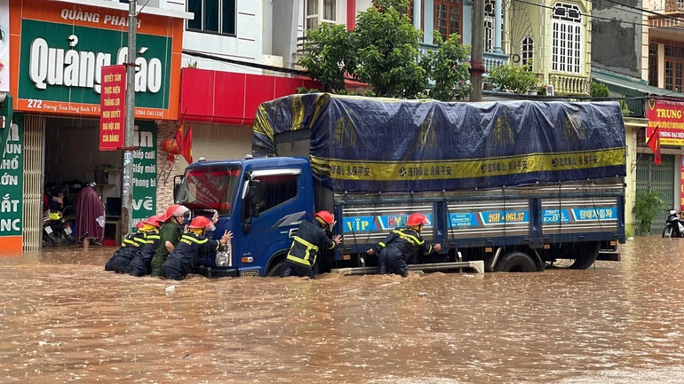
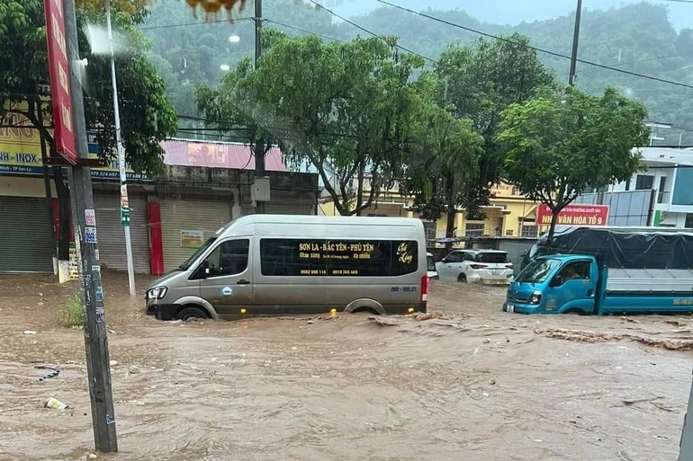

.webp)
Văn Yên
(Dân trí) - Trận mưa lớn kéo dài từ chiều 6/6 đến rạng sáng 7/6 trên địa bàn TP Sơn La đã khiến nhiều tuyến đường bị n gập sâu, người dân khẩn trương sơ tán, nhiều ô tô "bơi" trong nước.
Mưa lớn kéo dài cả đêm, "phố núi" Sơn La đường ngập như sông (Video: Công an tỉnh Sơn La).
Công an tỉnh Sơn La nỗ lực cứu hộ một chiếc xe con "dập dềnh" trong biển nước (Ảnh: Tuổi trẻ Công an Sơn La).
Sáng 7/6, trao đổi với PV Dân trí, một lãnh đạo UBND TP Sơn La (tỉnh Sơn La) ch o biết, từ chiều tối 6/6 đến rạng sáng cùng ngày, tại Sơn La có mưa lớn kéo dài trên diện r ộng khiến nhiều tuyến đường trung tâm TP Sơn La như Trần Đăng Ninh, Ngã 3 Quyết Thắng, Chu Văn Thịnh,… và khu vực bản Phiêng Ngùa, xã Chiềng Xôm, TP Sơn La bị ngập sâu.
Công an hỗ trợ người già, trẻ nhỏ sơ tán đến nơi an toàn (Ảnh: Công an Sơn La).
Tại khu vực trung tâm TP Sơn La, nước đổ về nhanh, ô tô, xe máy di chuyển khó khăn; tại các tuy ến đường như Trần Đăng Ninh, ngã 3 Quyết Thắng và nhiều tuyến đườn g trung tâm hướng đi Lê Duẩn, phương tiện di chuyển phải nhích từng mét một.
Theo người dân, mực nước ngập có đoạn lên tới qua đầu gối, có những đoạn đến ngang hông nên người dâ n và các phương tiện không thể di chuyển được.
Nhiều xe ô tô do mưa lớn kéo dài, mực nước dâng cao đã chết máy, lực lượng Cảnh sát Phòng cháy chữa cháy và Cứu nạn cứu hộ công an tỉnh, Cảnh sát giao thông Công an tỉnh và Công an TP Sơn La đã được huy động tới cứu hộ.

Lực lượng chức năng cứu hộ nhiều xe ô tô bị chết máy tại các tuy ến đường ngập sâu ở TP Sơn La (Ảnh: Tuổi trẻ Công an Sơn La).
Theo Công an tỉnh Sơn La, Phòng Cảnh sát cơ động Công an tỉnh cũng đã huy động 40 cán bộ chiến sĩ và 3 xe ô tô để hỗ trợ học sinh qua các điểm ngập đến cá c điểm thi trong kỳ thi vào lớp 10; phối hợp cùng các lực lượng chức năng sơ tán người và tài sản của một số hộ dân bị ngập nặng tại điểm bản Phiêng Ngùa, xã Chiềng Xôm.
Lực lượng chức năng tổ chức cứu hộ tại các điểm ngập sâu (Ảnh: Công an Sơn La).
Công an Sơn La sơ tán người và tài sản của một số hộ dân bị ngập nặng tại điểm bản Phiêng Ngùa, xã Chiềng Xôm. Tại các tuyến đường trên địa bàn, lực lượng CSGT Công an TP Sơn La cũng đã được huy động tối đa lực lượng để làm nhiệm vụ phân luồng, tránh gây ách tắc cục bộ kéo dài.
Nói thêm về tình trạng ngập sâu cục bộ này, vị lãnh đạo UBND TP Sơn La cho biế t, trước đây tại Sơn La rất hiếm khi xảy ra tình trạng ngập lụt như thế này. N guyên nhân ban đầu là do trận mưa lớn kéo dài khiến hệ thống thoát nước bị quá tải. Ngoài ra , tại một số điểm thoát nước bị vướng vật cản. "Đến khoảng 11h cùng ngày, chúng tôi đ ã xử lý xong việc thoát nước. Hiện mực nước đang rút dần", vị này nói.

Sau trận mưa lớn kéo dài, nhiều tuyến phố ở TP Sơn La bị ngập sâu (Ảnh: Hoàng Thổ).
Theo dự kiến, đợt mưa diện rộng này có khả năng kéo dài đến khoảng ngày 11-12/6, mưa lớ n tập trung ở vùng núi và trung du Bắc Bộ. Nguy cơ cao đến rất cao xảy ra lũ quét, sạt lở đất tạ các tỉnh vùng núi Bắc Bộ và ngập úng tại các khu vực trũng, thấp.
Theo báo cáo của lực lượng chức năng, trận mưa lớn trên diện rộng ở thành phố Sơ n La đã gây ngập úng tại nhiều khu vực trên địa bàn xã Chiềng Xôm. Ước tính ban đầu c ó hơn 20 ha diện tích trồng lúa, rau và hoa ở các bản bị ngập; 13 hộ dân khu vực bản Phiêng Ngùa nằm trong khu vực có nguy cơ cao bị ngập lụt, lực l ượng chức năng đã di dời 13 hộ dân này đến nơi an toàn.